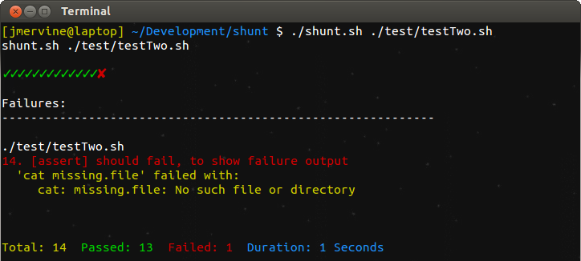
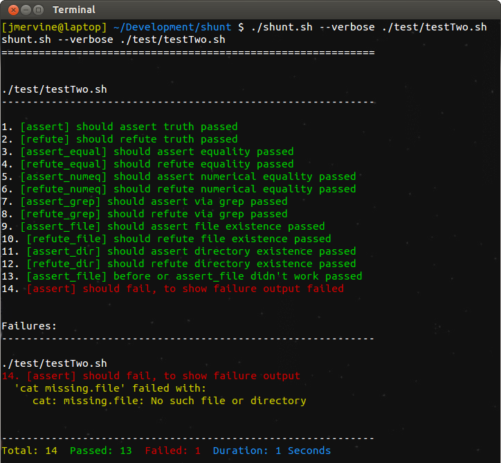
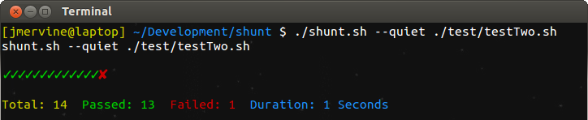

shunt
Simple Shell Testing Pseudo-Framework



What!? Why?
For a recent project, I wanted a very simple way to run some simple tests against my script output. I know there are a number of these kinds of things out there, but most of the ones I looked at were more complex then I wanted. To start, I created a basic shell script to test my scripts, but as I began to add to it, and want more from it, I decided to take a few minutes and build a pseudo-framework out of it.
I call it a "pseudo-framework" because it's really more of a helper, which gives you a handfull of assertions to run against bash commands. Well, that and it doesn't really have a name.
How?
Install
Note, in shunt latest means latest stable version.
curl -L https://raw.github.com/jmervine/shunt/master/install.sh | bash
# installs latest to ~/.bin/shunt
curl -L https://raw.github.com/jmervine/shunt/master/install.sh | bash -s master
# installs master to ~/.bin/shunt
curl -L https://raw.github.com/jmervine/shunt/master/install.sh | bash -s global
# installs latest to /usr/local/bin/shunt
curl -L https://raw.github.com/jmervine/shunt/master/install.sh | bash -s master local
# installs master to ./shunt.sh
Basic Usage
A basic test file looks like this:
# file: tests.sh
function run_tests {
####################################################
# Tests go here.
####################################################
COMMAND="/path/to/your/command"
assert_grep "$COMMAND" "Usage" \
"deplay usage without params"
assert_grep "$COMMAND --help" "Usage" \
"deplay usage with help"
assert_grep "$COMMAND --arg2 foobar" "Usage" \
"deplay usage without required arg"
refute_grep "$COMMAND --arg1 foobar" "Usage" \
"work with required arg"
####################################################
}
Run like this:
$ ./shunt.sh ./tests.sh
Usage:
Usage: ./shunt.sh <test files>
Options:
--plain Disable colors and icons.
--quiet Do not print error messages.
--verbose Display success messages.
--version Display version information.
--help Display this message.
See
test/testOne.shfor more examples.
Before / After Hooks
In addition to assertion, shunt also supports before and after hooks. Simply define a before or after function.
function before {
./some_setup_script.sh
echo "Running before shunt assertions.
}
function after {
./some_cleanup_script.sh
echo "Running after shunt assertions.
}
Assertions
Here's a full list of assertions at the time of this writing:
assert "CMD" "FAIL MESSAGE"refute "CMD" "FAIL MESSAGE"assert_equal "FIRST" "SECOND" "FAIL MESSAGE"refute_equal "FIRST" "SECOND" "FAIL MESSAGE"assert_numeq "FIRST" "SECOND" "FAIL MESSAGE"refute_numeq "FIRST" "SECOND" "FAIL MESSAGE"assert_grep "CMD" "GREP" "FAIL MESSAGE"refute_grep "CMD" "GREP" "FAIL MESSAGE"assert_file "FILE" "FAIL MESSAGE"refute_file "FILE" "FAIL MESSAGE"assert_dir "DIR" "FAIL MESSAGE"refute_dir "DIR" "FAIL MESSAGE"
Known Issues
Currently, assert_grep and refute_grep only support a single word, no spaces. I'm sure there's a simple solution to this, but I haven't had
a change to troubleshoot it yet and it wasn't an issue for my use case.
Development
- To run tests use:
make test - To update clistyle.sh, use:
make clistyle